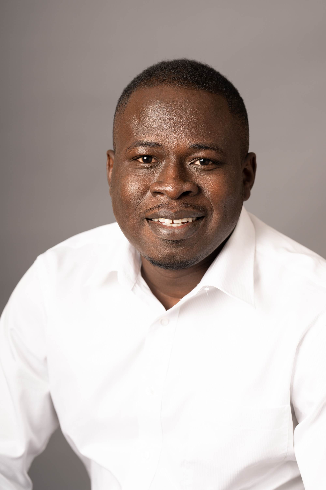

The People Behind MYD
Young changemakers, seasoned advisors, and dedicated volunteers united by a single conviction: Ghana's youth are the solution, not the problem.
Executive Leadership

Governance
Our board brings together experienced professionals from agriculture, public policy, finance, and civil society to guide MYD's strategic direction.
Join Us
Whether you're interested in volunteering, joining the staff, or advising MYD, we'd love to hear from you.